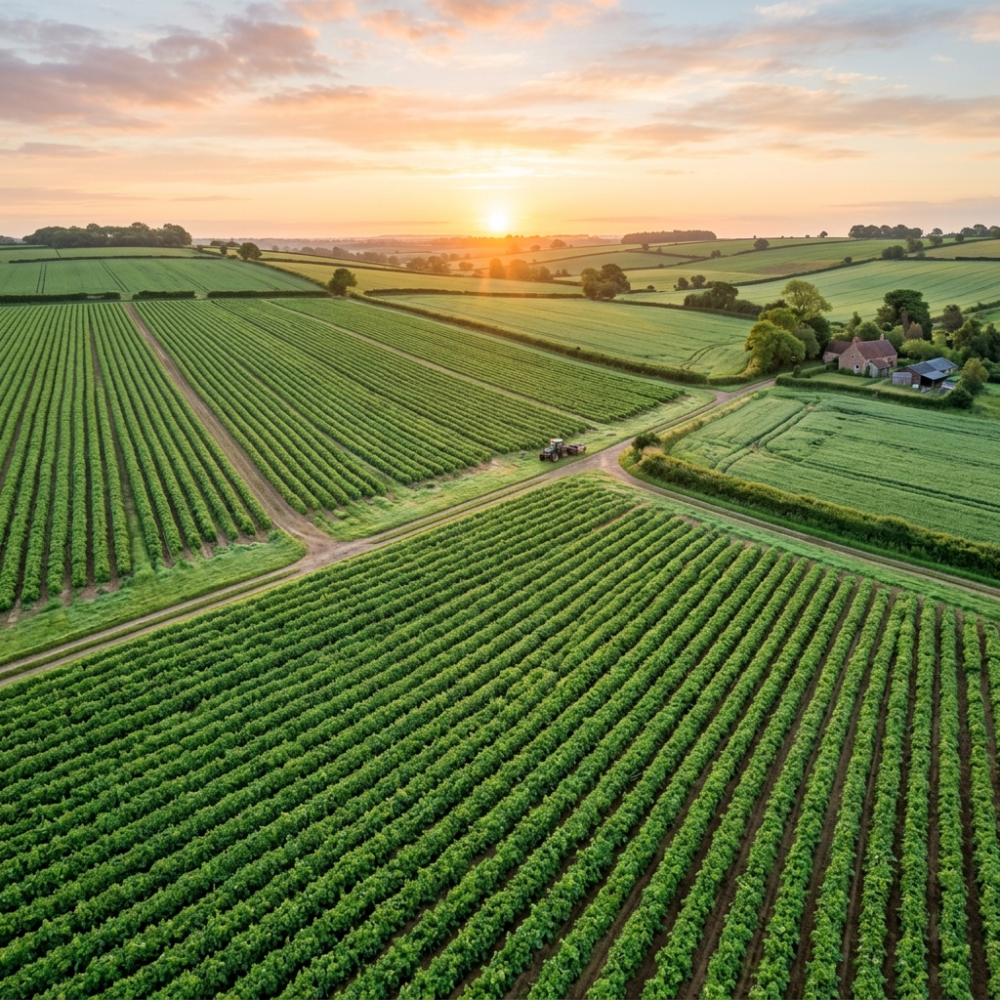
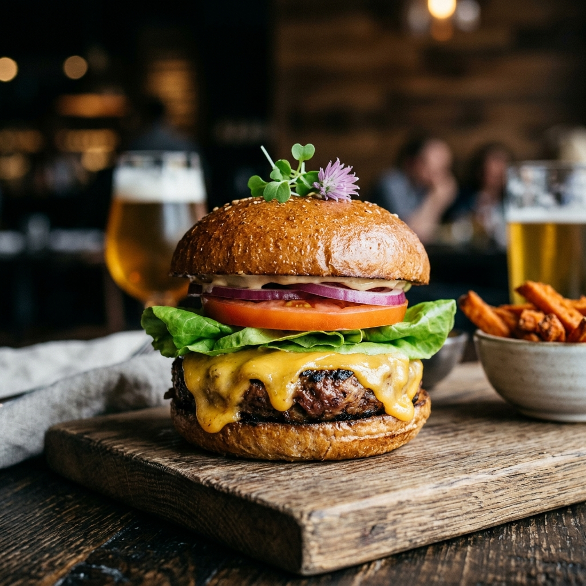
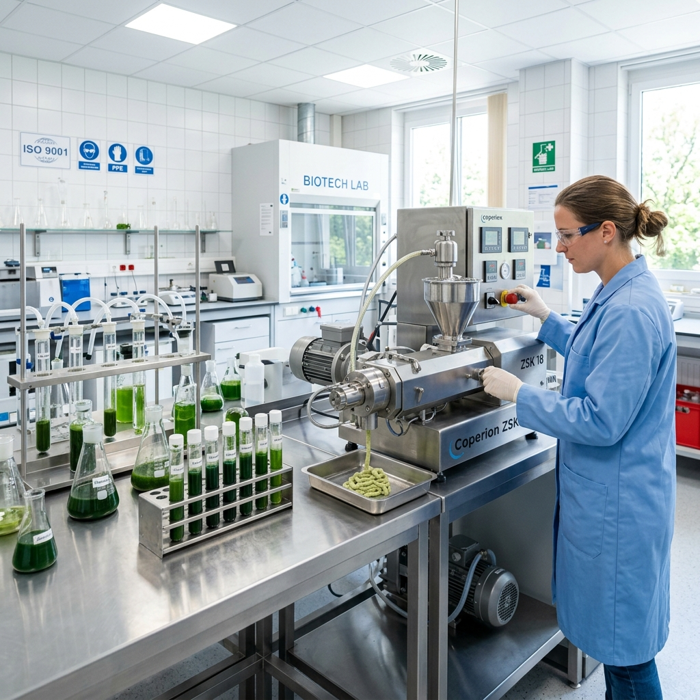

ECOLOGICAL BALANCE
Preserving Earth's Resources
Discover the environmental savings of alternative proteins. We reduce the land and freshwater requirements of our food system by bypass-processing crop protein directly.

Discover the environmental savings of alternative proteins. We reduce the land and freshwater requirements of our food system by bypass-processing crop protein directly.
Scroll down to observe how our legume texturizing processes compare to standard animal husbandry operations.
Emits a small fraction of the greenhouse gases produced by cattle farming.
Conserves thousands of gallons of freshwater per dry kilogram produced.
Bypasses crop-to-feed conversion layouts, lowering forest clearing scales.
We audit our entire supply chain from grain harvest down to factory packing tables. Here is how our carbon output compares directly to standard beef burger patties.

Nutritional metrics compiled to maximize cardiovascular efficiency, digestibility, and energy retention.
Legumes naturally contain prebiotic fibers that support digestive gut flora. Standard animal meats are completely free of dietary fiber.

Because plant cells rely on phytosterols rather than animal fats, our products contain zero cholesterol, supporting arterial elasticity.

Our proprietary pea-mung-rice blend compiles all 9 essential amino acids required for muscle synthesis and metabolic health.

Our targets are audited by international auditing boards for compliance.
Achieve 95% water recovery rates at our wet texturizing extrusion facilities.
Transition 100% of national delivery logistics to electric heavy vehicles charged via on-site solar systems.